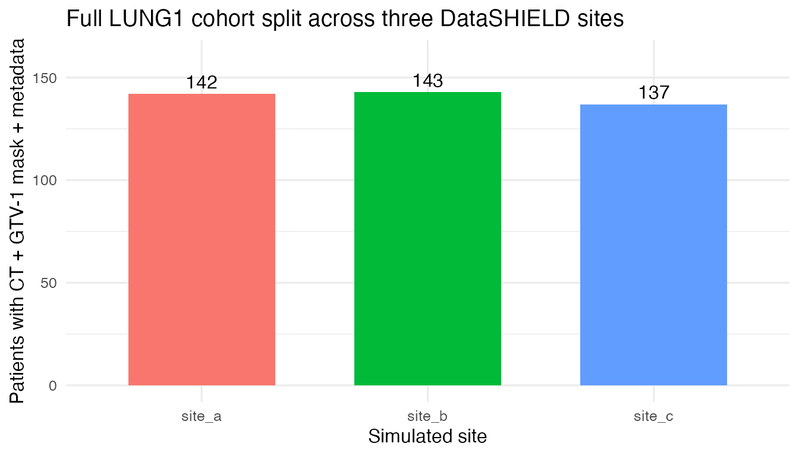
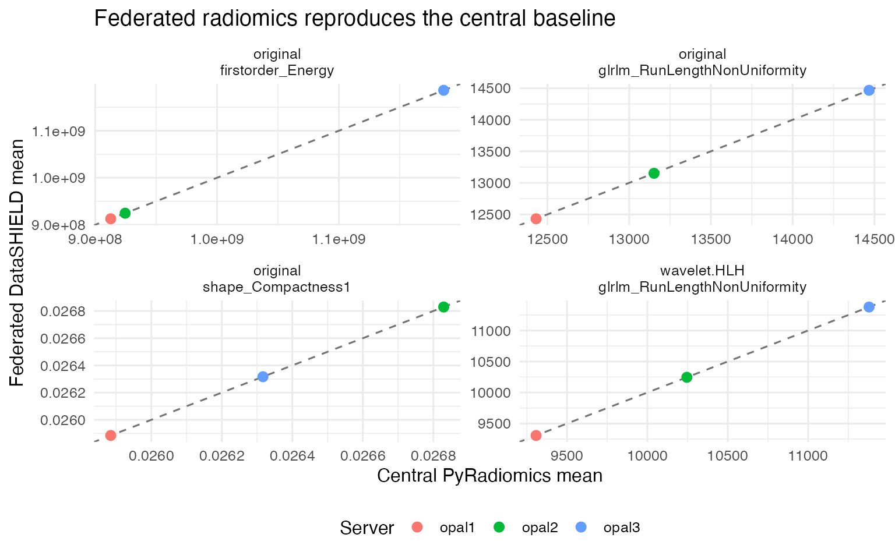
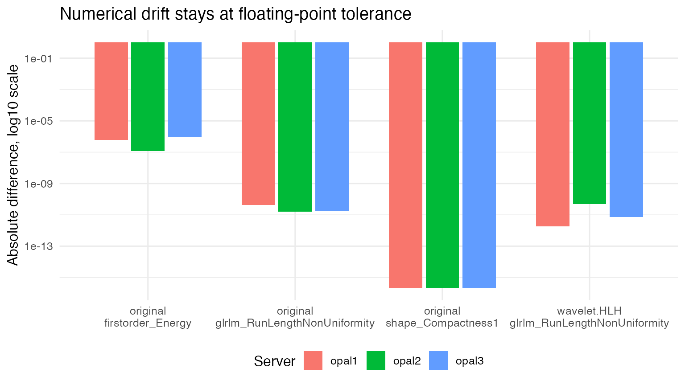
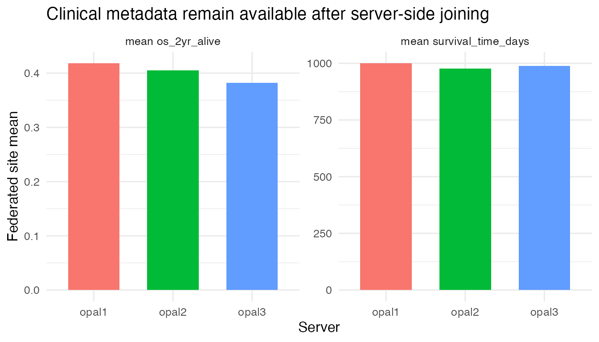
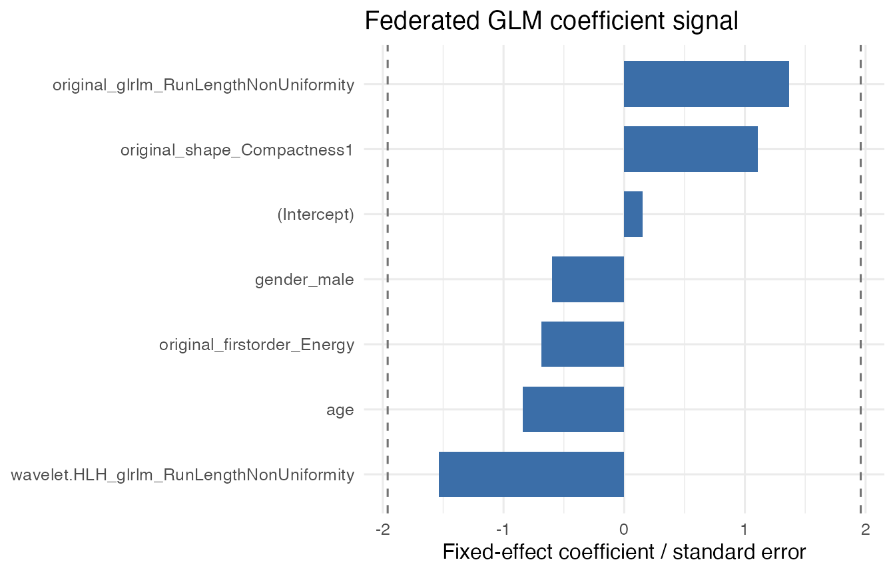

Federated LUNG1 radiomics study
Source:vignettes/lung1-federated-radiomics.Rmd
lung1-federated-radiomics.RmdThis article documents the full public LUNG1/NSCLC-Radiomics
demonstration for dsImagingClient. The workflow uses CT
images and RTSTRUCT GTV-1 tumour masks from TCIA, publishes
three simulated DataSHIELD sites through dsimaging-store,
runs Aerts-signature PyRadiomics extraction through
dsImaging and dsHPC, and compares the
federated summaries with a central PyRadiomics baseline over the same
patients.
The external anchor is the public NSCLC-Radiomics/LUNG1 collection and the radiomics workflow popularised by Aerts et al. The purpose here is narrower than re-estimating the complete prognostic modelling programme of that paper: the validation checks that the image-to-mask-to-radiomics path, executed through DataSHIELD jobs on separated sites, reproduces the same numerical feature summaries obtained by a central PyRadiomics run over the same prepared images.
The 422 LUNG1 patients are split reproducibly across three DataSHIELD
sites — Site A holds 142 patients, Site B 143 and Site C 137 — and
published with dsimaging-admin into an S3/MinIO-backed
layout that is registered as an imaging resource on each of the three
Opal servers. Every site keeps its own CT images, GTV-1
tumour masks and sample metadata. The steps below show what the
researcher runs once that server-side configuration is in place; images
and masks are resolved and processed at each site and never reach the
client.
Running This Validation
1. Connect to the DataSHIELD nodes. Open one session across the three Opal servers that register the LUNG1 imaging resource.
library(DSI)
library(DSOpal)
library(dsImagingClient)
library(dsBaseClient)
builder <- DSI::newDSLoginBuilder()
builder$append(server = "opal1", url = "https://opal-node-1.example.org",
user = "researcher", password = "********")
builder$append(server = "opal2", url = "https://opal-node-2.example.org",
user = "researcher", password = "********")
builder$append(server = "opal3", url = "https://opal-node-3.example.org",
user = "researcher", password = "********")
conns <- DSI::datashield.login(builder$build(), assign = FALSE)2. Initialise the imaging resource. Bind the LUNG1
resource to a server-side handle and confirm the CT images and
GTV-1 masks are readable before any job runs.
ds.imaging.init(conns, resource = "dsdemo.lung1_study", symbol = "img")
ds.imaging.validate(conns, "img")3. Extract the Aerts radiomics signature. Submit one
collection workflow over the existing tumour masks with the Aerts
profile. dsHPC schedules the per-image PyRadiomics jobs at
each site; the call returns an opaque workflow symbol.
result <- ds.imaging.radiomics.process_collection(
conns,
segmenter = ds.imaging.segmenter.existing_mask("masks"),
profile = ds.imaging.radiomics.profile.aerts_signature(),
batch_size = 1L,
timeout = 0,
handle = "img"
)4. Publish and load the feature table. Once
collection status reports is_done = TRUE, commit the
completed outputs to the asset catalogue and load them — with the joined
clinical metadata — into a server-side DataSHIELD table.
pub <- stats::setNames(lapply(names(conns), function(server) {
ds.imaging.radiomics.collection_publish(conns[server], result$symbol)
}), names(conns))
for (server in names(conns)) {
ds.imaging.radiomics.load_features(
conns[server],
asset_id = pub[[server]]$asset_id,
symbol = "rad",
include_metadata = TRUE,
syntactic_names = TRUE,
handle = "img"
)
}5. Analyse the federated feature table.
rad is now an ordinary server-side DataSHIELD table. Check
its dimensions, summarise the Aerts features and fit a federated
two-year-survival GLM from the features and clinical covariates.
ds.dim("rad", datasources = conns)
ds.mean("rad$original_firstorder_Energy", datasources = conns)
ds.glmSLMA(
formula = os_2yr_alive ~ original_firstorder_Energy +
original_shape_Compactness1 +
original_glrlm_RunLengthNonUniformity +
wavelet.HLH_glrlm_RunLengthNonUniformity +
age + gender_male,
family = "binomial",
dataName = "rad",
datasources = conns
)
DSI::datashield.logout(conns)Recorded Results
The values below come from the committed evidence artifact for the run described above; no live servers are contacted when the article renders.
Validated Cohort
The final validation pass used every public LUNG1 patient that passed
CT and GTV-1 mask conversion: 422 patients split across
three sites by stable patient hash.
site_counts <- lung1_evidence$site_counts
knitr::kable(site_counts)| site | dataset | images | masks | metadata_rows |
|---|---|---|---|---|
| site_a | lung1_full_site_a | 142 | 142 | 142 |
| site_b | lung1_full_site_b | 143 | 143 | 143 |
| site_c | lung1_full_site_c | 137 | 137 | 137 |
if (has_ggplot2) {
ggplot2::ggplot(site_counts,
ggplot2::aes(x = site, y = metadata_rows, fill = site)) +
ggplot2::geom_col(width = 0.65, show.legend = FALSE) +
ggplot2::geom_text(ggplot2::aes(label = metadata_rows), vjust = -0.4) +
ggplot2::labs(
x = "Simulated site",
y = "Patients with CT + GTV-1 mask + metadata",
title = "Full LUNG1 cohort split across three DataSHIELD sites"
) +
ggplot2::ylim(0, max(site_counts$metadata_rows) * 1.12) +
ggplot2::theme_minimal(base_size = 12)
} else {
barplot(site_counts$metadata_rows, names.arg = site_counts$site,
ylab = "Patients", xlab = "Simulated site",
main = "Full LUNG1 cohort split")
}
Published collection assets:
assets <- lung1_evidence$assets
knitr::kable(assets)| opal | dataset | generation | asset |
|---|---|---|---|
| opal1 | lung1_full_site_a | gen_20260509_152105_9e354de9 | asset_20260509_165902_42b9b1a5 |
| opal2 | lung1_full_site_b | gen_20260509_152108_8cf5c55f | asset_20260509_170056_0bfdbf8e |
| opal3 | lung1_full_site_c | gen_20260509_152110_b82b5785 | asset_20260509_170057_9a3db2ab |
After
ds.imaging.radiomics.load_features(..., include_metadata = TRUE),
the server-side analysis tables had these dimensions:
loaded_dims <- lung1_evidence$loaded_dimensions
knitr::kable(loaded_dims)| source | dimensions |
|---|---|
| opal1 | 142 x 20 |
| opal2 | 143 x 20 |
| opal3 | 137 x 20 |
| combined | 422 x 20 |
Federated Versus Central Radiomics
The published collection parquet schema is constrained by the Aerts
signature profile to sample_id plus four radiomics
features. The remaining loaded columns are clinical metadata joined by
sample_id.
knitr::kable(
comparison[, c("server", "feature", "federated", "central",
"abs_diff_fmt", "rel_diff_fmt")],
col.names = c("server", "feature", "federated mean", "central mean",
"abs diff", "rel diff"),
digits = 12
)| server | feature | federated mean | central mean | abs diff | rel diff |
|---|---|---|---|---|---|
| opal1 | original_firstorder_Energy | 9.127437e+08 | 9.127437e+08 | 5.960e-07 | 6.530e-16 |
| opal1 | original_glrlm_RunLengthNonUniformity | 1.243088e+04 | 1.243088e+04 | 4.366e-11 | 3.512e-15 |
| opal1 | original_shape_Compactness1 | 2.588479e-02 | 2.588479e-02 | 2.429e-17 | 9.382e-16 |
| opal1 | wavelet.HLH_glrlm_RunLengthNonUniformity | 9.307556e+03 | 9.307556e+03 | 1.819e-12 | 1.954e-16 |
| opal2 | original_firstorder_Energy | 9.245573e+08 | 9.245573e+08 | 1.192e-07 | 1.289e-16 |
| opal2 | original_glrlm_RunLengthNonUniformity | 1.315188e+04 | 1.315188e+04 | 1.637e-11 | 1.245e-15 |
| opal2 | original_shape_Compactness1 | 2.682938e-02 | 2.682938e-02 | 1.388e-17 | 5.173e-16 |
| opal2 | wavelet.HLH_glrlm_RunLengthNonUniformity | 1.024552e+04 | 1.024552e+04 | 4.911e-11 | 4.794e-15 |
| opal3 | original_firstorder_Energy | 1.186056e+09 | 1.186056e+09 | 9.537e-07 | 8.041e-16 |
| opal3 | original_glrlm_RunLengthNonUniformity | 1.446690e+04 | 1.446690e+04 | 1.819e-11 | 1.257e-15 |
| opal3 | original_shape_Compactness1 | 2.631661e-02 | 2.631661e-02 | 4.857e-17 | 1.846e-15 |
| opal3 | wavelet.HLH_glrlm_RunLengthNonUniformity | 1.137901e+04 | 1.137901e+04 | 7.276e-12 | 6.394e-16 |
if (has_ggplot2) {
ggplot2::ggplot(comparison,
ggplot2::aes(x = central, y = federated, color = server)) +
ggplot2::geom_abline(slope = 1, intercept = 0, linetype = "dashed",
color = "grey45") +
ggplot2::geom_point(size = 2.6) +
ggplot2::facet_wrap(~feature_label, scales = "free") +
ggplot2::labs(
x = "Central PyRadiomics mean",
y = "Federated DataSHIELD mean",
color = "Server",
title = "Federated radiomics reproduces the central baseline"
) +
ggplot2::theme_minimal(base_size = 12) +
ggplot2::theme(legend.position = "bottom")
} else {
plot(comparison$central, comparison$federated,
xlab = "Central PyRadiomics mean",
ylab = "Federated DataSHIELD mean",
main = "Federated versus central radiomics means")
abline(0, 1, lty = 2, col = "grey45")
}
plot_errors <- comparison
plot_errors$abs_diff_floor <- pmax(plot_errors$abs_diff, .Machine$double.eps)
if (has_ggplot2) {
ggplot2::ggplot(plot_errors,
ggplot2::aes(x = feature_label, y = abs_diff_floor,
fill = server)) +
ggplot2::geom_col(position = ggplot2::position_dodge(width = 0.75),
width = 0.68) +
ggplot2::scale_y_log10() +
ggplot2::labs(
x = NULL,
y = "Absolute difference, log10 scale",
fill = "Server",
title = "Numerical drift stays at floating-point tolerance"
) +
ggplot2::theme_minimal(base_size = 12) +
ggplot2::theme(legend.position = "bottom")
} else {
dotchart(plot_errors$abs_diff_floor, labels = plot_errors$feature_label,
xlab = "Absolute difference",
main = "Federated-central absolute differences")
}
Maximum absolute difference: 9.537e-07. Maximum relative difference: 4.794e-15.
Clinical Metadata And Federated GLM
Clinical metadata were joined to the radiomics feature table on the server side before analysis.
clinical <- lung1_evidence$clinical
knitr::kable(clinical, digits = 7)| metric | opal1 | opal2 | opal3 |
|---|---|---|---|
| mean survival_time_days | 1000.6197000 | 976.9650000 | 989.0803000 |
| mean os_2yr_alive | 0.4184397 | 0.4055944 | 0.3823529 |
clinical_long <- data.frame(
metric = rep(clinical$metric, each = 3),
server = rep(c("opal1", "opal2", "opal3"), times = nrow(clinical)),
value = as.numeric(t(clinical[, c("opal1", "opal2", "opal3")]))
)
if (has_ggplot2) {
ggplot2::ggplot(clinical_long,
ggplot2::aes(x = server, y = value, fill = server)) +
ggplot2::geom_col(width = 0.65, show.legend = FALSE) +
ggplot2::facet_wrap(~metric, scales = "free_y") +
ggplot2::labs(
x = "Server",
y = "Federated site mean",
title = "Clinical metadata remain available after server-side joining"
) +
ggplot2::theme_minimal(base_size = 12)
} else {
barplot(as.matrix(clinical[, c("opal1", "opal2", "opal3")]),
beside = TRUE, legend.text = clinical$metric,
ylab = "Site mean", main = "Clinical metadata site means")
}
A federated ds.glmSLMA() model was fit with:
stats::as.formula(lung1_evidence$glm$formula)
#> os_2yr_alive ~ original_firstorder_Energy + original_shape_Compactness1 +
#> original_glrlm_RunLengthNonUniformity + wavelet.HLH_glrlm_RunLengthNonUniformity +
#> age + gender_maleThe run produced num.valid.studies = 3;
<new.glm.obj> was created and validated in all data
sources.
glm_fe <- lung1_evidence$glm$fixed_effects
knitr::kable(glm_fe, digits = 6)| term | pooled.FE | se.FE |
|---|---|---|
| (Intercept) | 0.141618 | 0.926394 |
| original_firstorder_Energy | 0.000000 | 0.000000 |
| original_shape_Compactness1 | 23.833090 | 21.543540 |
| original_glrlm_RunLengthNonUniformity | 0.000082 | 0.000060 |
| wavelet.HLH_glrlm_RunLengthNonUniformity | -0.000118 | 0.000077 |
| age | -0.009694 | 0.011506 |
| gender_male | -0.146425 | 0.244664 |
glm_plot <- glm_fe
glm_plot$z_score <- glm_plot$pooled.FE / glm_plot$se.FE
glm_plot$term <- factor(glm_plot$term,
levels = glm_plot$term[order(glm_plot$z_score)])
if (has_ggplot2) {
ggplot2::ggplot(glm_plot, ggplot2::aes(x = term, y = z_score)) +
ggplot2::geom_hline(yintercept = c(-1.96, 1.96), linetype = "dashed",
color = "grey45") +
ggplot2::geom_col(fill = "#3b6ea8", width = 0.7) +
ggplot2::coord_flip() +
ggplot2::labs(
x = NULL,
y = "Fixed-effect coefficient / standard error",
title = "Federated GLM coefficient signal"
) +
ggplot2::theme_minimal(base_size = 12)
} else {
dotchart(glm_plot$z_score, labels = as.character(glm_plot$term),
xlab = "Coefficient / standard error",
main = "Federated GLM coefficient signal")
abline(v = c(-1.96, 1.96), lty = 2, col = "grey45")
}